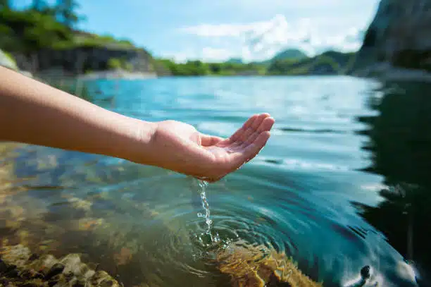
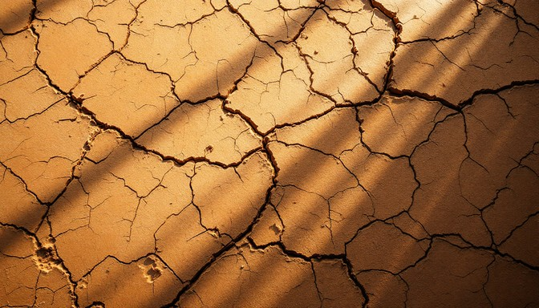
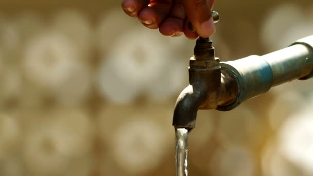
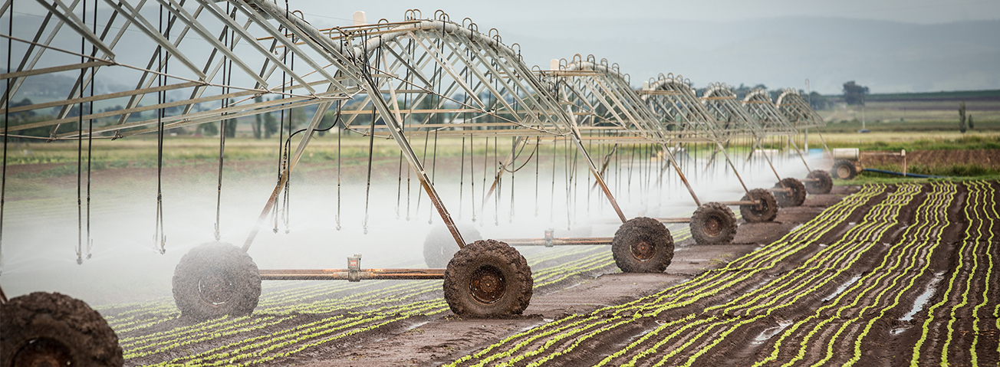
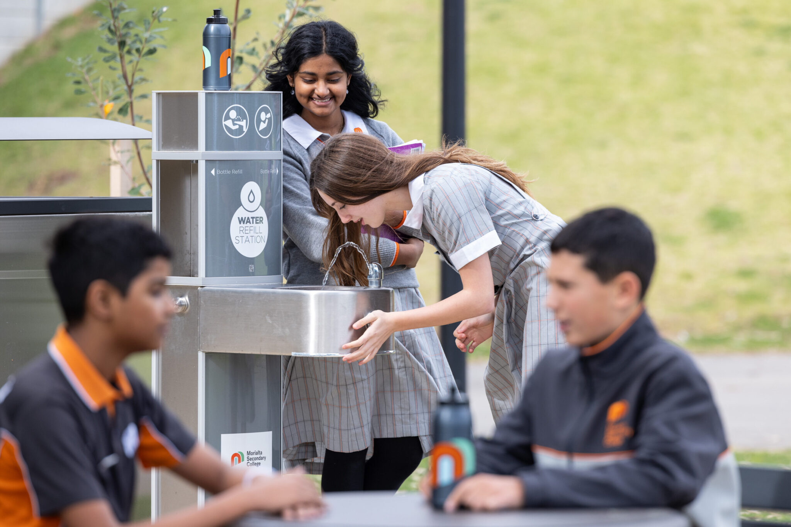

Water Conservation
Understanding the value of every single drop. Learn how adopting small, smart daily habits can drastically reduce waste and secure our planet's most critical resource.
1. Why Conserve Water?
Water conservation encompasses the policies, strategies, and activities to sustainably manage the natural resource of fresh water, to protect the hydrosphere, and to meet the current and future human demand. Population growth, household size, and growth in affluence all heavily impact how much water is used.
Although our planet is covered by water, only about 1% is readily accessible fresh water. The rest is trapped in glaciers, deep snowfields, or is salt water found in the oceans. As climate change disrupts natural water cycles, conserving this 1% has never been more critical.
SDG Target 6.4: By 2030, substantially increase water-use efficiency across all sectors and ensure sustainable withdrawals and supply of freshwater to address water scarcity and substantially reduce the number of people suffering from water scarcity.

Environmental Protection
Conserving water reduces energy consumption. Treating, pumping, and heating water requires massive amounts of energy. By using less water, we simultaneously reduce our carbon footprint and help fight climate change.
Additionally, keeping water in our rivers, dams, and aquifers protects local wildlife and the ecosystems that rely on steady, clean water sources to survive.
- Maintains balance in local aquatic ecosystems
- Reduces energy usage associated with water transport
- Prevents the depletion of critical groundwater aquifers
- Secures safe reserves for times of prolonged drought
2. The Scarcity Crisis
Water scarcity is both a natural and a human-made phenomenon. There is enough freshwater on the planet for eight billion people, but it is distributed unevenly and too much of it is wasted, polluted, or unsustainably managed.

A Growing Danger
As cities expand and industries grow, the competing demands for water increase dramatically. This fierce competition triggers water stress, a condition where the demand for safe, usable water in a particular area exceeds the supply available.
Conservation is the most cost-effective and environmentally sound way to reduce our demand for water. Every drop saved today is a drop banked for the future.
3. Home & Household Habits
We often use much more water than we realise in our daily routines. Fortunately, small changes at home can collectively save thousands of litres of water every year, drastically reducing household waste.
In the Bathroom
The bathroom accounts for over half of all indoor water use. Turning off the tap while brushing your teeth can save up to 6 litres per minute. Upgrading to a modern dual-flush toilet and taking shorter, 4-minute showers makes a massive difference over time.
In the Kitchen
Washing dishes under a running tap wastes tremendous amounts of water. Wait until you have a full load before running the dishwasher—it's surprisingly more water-efficient than handwashing. When cleaning vegetables, use a bowl filled with water instead of a continuous stream.
Addressing Leaks
A single dripping tap can waste enough water in a year to fill an entire bathtub hundreds of times over. Check your internal plumbing regularly. If your water meter runs while everything is turned off, you may have a hidden pipe leak.

- Turn off the tap while brushing teeth or shaving
- Wait for full loads before using washing machines or dishwashers
- Fix dripping taps and running toilets immediately
- Use a watering can instead of a hose pipe in the garden
4. Sustainable Consumption
The "virtual water" hidden in the food we eat and the clothes we wear accounts for the vast majority of our water footprint. Understanding how much water is used to produce everyday items is the first step toward more sustainable choices.

Hidden Water Usage
It takes roughly 15,000 litres of water to produce a single kilogram of beef, compared to just 300 litres for a kilogram of vegetables. Furthermore, creating a single cotton t-shirt requires around 2,700 litres of water. Consciously reducing meat consumption and avoiding "fast fashion" are incredibly powerful ways to conserve global water resources.
By consuming less and opting for sustainably sourced, recycled, and plant-based products, you drastically lower your invisible water footprint without turning off a single tap.
5. What Can Students Do?
As members of the university community, our collective habits shape institutional footprint. By driving awareness and adopting eco-friendly policies, students can spearhead conservation efforts directly on campus.

On Campus
- Carry a reusable water bottle and use designated refill stations
- Report any leaking taps or toilets in university facilities immediately
- Support catering outlets that offer sustainably sourced or plant-focused meals
- Encourage dorms and shared housing to compete in water-saving challenges
In Your Community
- Organise awareness campaigns targeting water waste in local neighbourhoods
- Advocate for universities to invest in rainwater harvesting systems
- Educate friends and family about the hidden water cost of fast fashion
6. Smart Technologies
Advances in smart technology and IoT (Internet of Things) devices grant us unprecedented visibility into how we use water, creating automated safety nets against waste and inefficiency.
The Future of Conservation
Smart meters can track water consumption in real time to the drop, sending mobile alerts if usage spikes abnormally—which prevents massive pipe leak disasters. Smart irrigation controllers use live local weather data to ensure lawns and agriculture are only watered exactly when necessary, avoiding watering during rainstorms.
- App-connected shower timers limit water usage interactively
- Smart tap attachments automatically cut off flow when hands are removed
- IoT leakage sensors notify homeowners of micro-drips before they cause damage
- Greywater recycling hubs filter sink water to be reused directly in toilets
The synergy of personal habit and smart technology creates a formidable barrier against waste. Every small upgrade contributes to a massive global impact.